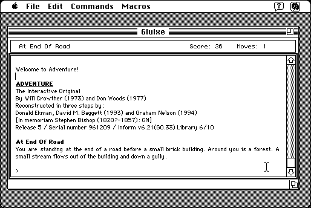

Download
Glulxe-034.zip (217K) Glulxe 0.3.4 repackaged into a zipped hfs disk image and checksum file. The disk image can be mounted with Mini vMac.
Glulxe-034.hqx (291K) Glulxe 0.3.4 in the original format.
copyright: Andrew Plotkin
mod date: Jul 10, 2000
license: Freeware
official url :
Glulx: A 32-Bit Virtual Machine for IF
Interpreter for Glulx text adventures. Requires System 7. Source code is available (below). Similar to MaxZip, which interprets Z-code. Glulx is similar to Z-code, but it can handle larger games.
Warning : Though the “Import Game File” command has an option to “Display all files, regardess of type”, Glulxe requires the file type to be set correctly, to ‘UlxG’. IFDropFile takes care of this.

Download Source
glulxe-glulxe-0.3.4.tar.gz (41K) Glulxe 0.3.4 source. Uses MacGlk (below).
MacGlk-src-087.hqx (1.2M) MacGlk library 0.8.7 source.
If you find these downloads useful, please consider helping the Gryphel Project, which hosts them.
Here are the md5 checksums for the downloads, signed with Gryphel Key 5:
--------- GRY SIGNED TEXT --------- 57fa0f974139bb207e51743eaaad08ee Glulxe-034.zip 2dc099924453c2d82e2d56cb6c8d0a0f Glulxe-034.hqx f11a0f77d7af35e256f9f057e0821d78 glulxe-glulxe-0.3.4.tar.gz 2c9353e816f9ba2224d873594ab47432 MacGlk-src-087.hqx ------- BEGIN GRY SIGNATURE ------- Gry/4Xa8CFcUzxdN/B6nop8/GubwtzyfdNmUHANMY6hFRsgcdFmU2Es4QjjQgSji S3Xt/lsTwkg6+2d630N6emKC8PV+7TPflsdecIsnNKiYjRfVw81CNbubzFltdn23 9AB5qYayo+VEDXnXxFpLRpEEF1WE7vl58MdVjWB9TBj30hg4FohvNVb0o4ZaJpz8 -------- END GRY SIGNATURE --------